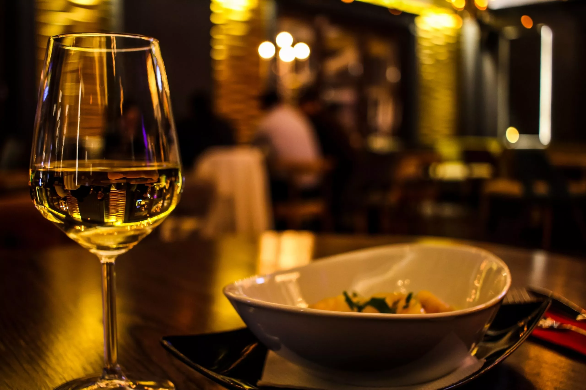

LINQ

Historia
Linq tiene una rica historia que se remonta a más de 50 años. Fundado por la familia Malnero en el corazón de la ciudad, pronto se convirtió en el destino gastronómico más popular para aquellos que buscaban una experiencia de lujo. Con el tiempo, el restaurante se ha expandido y renovado para mantenerse al día con las últimas tendencias culinarias y de diseño, pero siempre ha mantenido su compromiso con la calidad, la creatividad y la excelencia

Vision
Linq se enfoca en brindar una experiencia gastronómica excepcional a sus comensales. Desde el momento en que los clientes cruzan la puerta, el ambiente sofisticado y acogedor los envuelve, creando una sensación de exclusividad y lujo. Los detalles en la decoración, el mobiliario y la iluminación son cuidadosamente seleccionados para crear una atmósfera elegante y refinada. La música suave y el servicio impecable complementan la experiencia y hacen que los clientes se sientan especiales
Personal
Desde los meseros hasta el equipo de cocina, cada uno cumple un rol clave en el éxito de Linq. La selección cuidadosa del personal es esencial para asegurar que cada uno tenga la formación y habilidades necesarias para brindar un servicio excepcional. Los meseros son expertos en la carta y el maridaje de vinos; tienen una actitud amable, profesional y son capaces de anticipar las necesidades de los clientes. Los chefs y sus asistentes son creativos, talentosos y cuentan con un alto nivel de conocimiento culinario
Experiencia
La experiencia que brinda Linq es verdaderamente única e inolvidable. Desde el ambiente sofisticado hasta el servicio impecable y la deliciosa comida y vinos, cada detalle está diseñado para hacer que los clientes se sientan especiales y disfruten de una experiencia gastronómica inolvidable
menu
reseñas
contacto